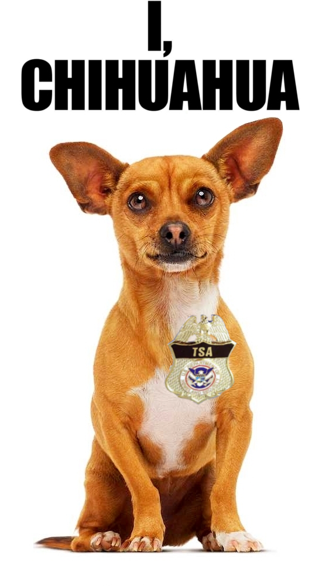

<?xml version="1.0" encoding="UTF-8"?>
<rss version="2.0"
	xmlns:content="http://purl.org/rss/1.0/modules/content/"
	xmlns:wfw="http://wellformedweb.org/CommentAPI/"
	xmlns:dc="http://purl.org/dc/elements/1.1/"
	xmlns:atom="http://www.w3.org/2005/Atom"
	xmlns:sy="http://purl.org/rss/1.0/modules/syndication/"
	xmlns:slash="http://purl.org/rss/1.0/modules/slash/"
	>

<channel>
	<title>Chronosynclastic Infundibulum &#187; yemen</title>
	<atom:link href="http://www.semanticoverload.com/tag/yemen/feed/" rel="self" type="application/rss+xml" />
	<link>http://www.semanticoverload.com</link>
	<description>The world through my prisms</description>
	<lastBuildDate>Thu, 07 Apr 2011 17:36:17 +0000</lastBuildDate>
	<language>en-US</language>
	<sy:updatePeriod>hourly</sy:updatePeriod>
	<sy:updateFrequency>1</sy:updateFrequency>
	<generator>http://wordpress.org/?v=3.5</generator>
		<item>
		<title>The emperor is naked and even he concedes it</title>
		<link>http://www.semanticoverload.com/2011/03/20/the-emperor-is-naked-and-even-he-concedes-it/</link>
		<comments>http://www.semanticoverload.com/2011/03/20/the-emperor-is-naked-and-even-he-concedes-it/#comments</comments>
		<pubDate>Sun, 20 Mar 2011 21:19:47 +0000</pubDate>
		<dc:creator>Semantic Overload</dc:creator>
				<category><![CDATA[politics]]></category>
		<category><![CDATA[rant]]></category>
		<category><![CDATA[US]]></category>
		<category><![CDATA[Bahrain]]></category>
		<category><![CDATA[Darfur]]></category>
		<category><![CDATA[Libya]]></category>
		<category><![CDATA[Mullen]]></category>
		<category><![CDATA[Sudan]]></category>
		<category><![CDATA[war]]></category>
		<category><![CDATA[yemen]]></category>

		<guid isPermaLink="false">http://www.semanticoverload.com/?p=796</guid>
		<description><![CDATA[The US has started its military offensive against Libya. Incidentally, the latter is an oil rich country ruled by a dictator who is not America&#8217;s puppet. Sound familiar? Hint: 1991 and 2003. In fact, the whole offensive has bipartisan support. So it&#8217;s fair to say that there are very few within the government (including the [...]]]></description>
				<content:encoded><![CDATA[<p>The US has started its <a href="http://news.yahoo.com/s/ap/lt_libya_obama">military offensive against Libya</a>. Incidentally, the latter is an oil rich country ruled by a dictator who is not America&#8217;s puppet. Sound familiar? Hint: <a href="http://en.wikipedia.org/wiki/Gulf_War">1991</a> and <a href="http://en.wikipedia.org/wiki/Iraq_War">2003</a>.</p>
<p>In fact, the whole offensive has <a href="http://www.dailypolitical.com/politics/republicans-say-president-waited-too-long-taking-action-against-libya.htm">bipartisan support</a>. So it&#8217;s fair to say that there are very few within the government (including the opposition party of &#8216;no&#8217;) who do not support the action. The major reason for this offensive is that Gaddafi did not heed to the demands of the international community which were [<a href="http://www.npr.org/2011/03/19/134682336/U-S-Allies-Discuss-Military-Action-Against-Libya">source</a>]:</p>
<blockquote><p>Gadhafi must stop his troops from advancing on Benghazi, pull them back from Ajdabiya, Misurata, and Zawiyah, and establish water, electricity and gas supplies to all areas. Humanitarian assistance must be allowed to reach the people of Libya. Let me be clear, these terms are not negotiable.</p></blockquote>
<p>The fear is that if the unrest in Libya is left unchecked, then the entire nation will descend into a civil war and there will be human-rights violation which is something the US is <a href="http://www.huffingtonpost.com/2011/03/19/human-rights-activists-protest-abuse-bradley-manning_n_838006.html">very</a> <a href="http://www.hrw.org/en/category/topic/counterterrorism/guantanamo">protective</a> of. Interestingly, doesn&#8217;t that argument make a stronger case for intervention in <a href="http://en.wikipedia.org/wiki/War_in_Darfur">Darfur, Sudan</a>? Of course it does! Then I wonder why the US refuses to intervene in what is arguably the worst abuses of human rights since <a href="http://en.wikipedia.org/wiki/Pol_Pot">Pol Pot&#8217;s regime</a>.</p>
<p>We all know what&#8217;s going on. Libya has oil and Gaddafi is not a US puppet. Currently Gaddafi is struggling to maintain complete control over Libya. So US has both the motive and the opportunity to change the status quo. To place a figurehead in an oil-rich country so as to serve US interests. Lately, the US is being increasingly candid about its intentions. I suppose it is a good thing in some ways. For example, the US intentions are now <a href="http://www.gametheory.net/dictionary/CommonKnowledge.html">common knowledge</a>, instead of being <a href="http://www.gametheory.net/dictionary/CommonKnowledge.html">mutual knowledge</a>.</p>
<p>The most blatant admission of America&#8217;s abandonment a moral compass came from the <a href="http://en.wikipedia.org/wiki/Chairman_of_the_Joint_Chiefs_of_Staff">Chairman of the Joint Chiefs of Staff</a> Admiral <a href="http://en.wikipedia.org/wiki/Michael_Mullen">Mullen</a>. Given that the rulers in  Bahrain and Yemen have used force against anti-government demonstrators, and yet, the US has intervened only Libya and not Bahrain or Yemen, Admiral Mullen argued [<a href="http://thehill.com/blogs/blog-briefing-room/news/150881-mullen-we-have-treat-every-country-differenty">source</a>]:</p>
<blockquote><p>&#8220;We haven&#8217;t had a relationship with Libya for a long, long time. The Bahrainis and that country has been a critical ally for decades. So we&#8217;re working very hard to support a peaceful resolution there, as tragic as it has been, and we certainly decry the violence which has occurred in Bahrain. I just think the approach there needs to be different&#8221;</p></blockquote>
<p>Translation: We don&#8217;t like Gaddafi, and so it&#8217;s ok to attack Libya under this pretext. We like the rulers of Bahrain and Yemen. They serve US interests. So we don&#8217;t care enough to ensure that the citizens of those countries actually enjoy any of the freedoms that we constantly exalt. All that matters is that US is better off in the end. Everything else is just a puppet show anyway.</p>
]]></content:encoded>
			<wfw:commentRss>http://www.semanticoverload.com/2011/03/20/the-emperor-is-naked-and-even-he-concedes-it/feed/</wfw:commentRss>
		<slash:comments>0</slash:comments>
		</item>
		<item>
		<title>TSA is like a Chihuahua</title>
		<link>http://www.semanticoverload.com/2010/01/05/tsa-is-like-a-chihuahua/</link>
		<comments>http://www.semanticoverload.com/2010/01/05/tsa-is-like-a-chihuahua/#comments</comments>
		<pubDate>Tue, 05 Jan 2010 05:43:34 +0000</pubDate>
		<dc:creator>Semantic Overload</dc:creator>
				<category><![CDATA[humor]]></category>
		<category><![CDATA[US]]></category>
		<category><![CDATA[chihuahua]]></category>
		<category><![CDATA[Jeff Dunham]]></category>
		<category><![CDATA[nigerian]]></category>
		<category><![CDATA[profiling]]></category>
		<category><![CDATA[travel]]></category>
		<category><![CDATA[TSA]]></category>
		<category><![CDATA[yemen]]></category>

		<guid isPermaLink="false">http://www.semanticoverload.com/?p=388</guid>
		<description><![CDATA[Indeed, TSA is much like the Chihuahua that Jeff Dunham talks about in the opening act of his &#8220;Spark of Insanity&#8221; tour. The sketch goes something like this [source]: &#8220;I figured out size does matter in the canine brain. Bill &#8211; golden retriever &#8211; very smart animal. When he was a puppy and I had [...]]]></description>
				<content:encoded><![CDATA[<p><a href="../../../wp-content/uploads/2010/01/tsa_chihuahua.png"></a>Indeed, TSA is much like the Chihuahua that Jeff Dunham talks about in the opening act of his &#8220;Spark of Insanity&#8221; tour. The sketch goes something like this [<a title="Jeff Dunham on Chihuahua" href="http://www.tubechop.com/watch/44332">source</a>]:</p>
<blockquote><p>&#8220;I figured out size does matter in the canine brain. Bill &#8211; golden retriever &#8211; very smart animal. When he was a puppy and I had to potty train him, if he pooped on the living room carpet, I stuck his nose in it. Three time later, he figured out &#8216;Oh, I am not supposed to crap here!&#8217;. Next two dogs, the same thing.</p>
<p>Now the little brain-dead Chihuahua comes along. She poops on the living room carpet, I stick her nose in it; three times later she thinks &#8216;Oh, I am not supposed to crap ever!&#8217;&#8230;.. And that&#8217;s why they shake.&#8221;</p></blockquote>
<p>The TSA did pretty much the same thing. On December 26th 2009, <a title="AP sources: Attempt to blow up airliner foiled" href="http://news.yahoo.com/s/ap/us_airliner_disturbance">Umar Farouk Abdul Mutallab tried to blow up a Northwest Airlines plane</a> as it was preparing to land in Detroit. The usual noises followed ranging from <a title="Hoekstra: Blame Obama For Near Bombing Of Airliner" href="http://tpmlivewire.talkingpointsmemo.com/2009/12/rep-pete-hoekstra-r-mi-says-blame-obama-for-near-bombing-of-airliner.php">blaming Obama</a> for the incident to demanding that <a href="http://www.telegraph.co.uk/news/worldnews/middleeast/yemen/6906861/Detroit-terror-attack-passenger-profiling-failed.html">all Muslims be made to go through special security checks</a>.</p>
<p>This incident could have been prevented if Umar Farouk Abdul Mutallab was not allowed to board the plane in the first place. All the warning signs were there: Umar&#8217;s <a href="http://www.cbsnews.com/stories/2009/12/26/ap/government/main6025129.shtml">father had warned the CIA</a> about Umar,  <a href="http://www.mirror.co.uk/news/top-stories/2009/12/31/beware-the-nigerian-from-yemen-115875-21932857/">anti-terror chiefs were warned five months</a> ago that an al-Qaeda cell in Yemen was plotting a deadly attack using &#8220;The Nigerian&#8221;. Disregarding both these (vital) pieces of information, here is someone who bought one-way tickets from Nigeria to Yemen to the USA paying only cash and with no baggages to check-in. This should have raised suspicions, and he should have been singled out for additional security and through additional scanners.</p>
<p>Metaphorically speaking, TSA pooped on the living room carpet and the Nigerian stuck their nose into it! One would expect a rational response to be better mechanisms to profile passengers, not according to race or religion (which seems to be what all the rage is about), but according to passenger behavior. In this case, <a href="http://www.washingtonpost.com/wp-dyn/content/article/2009/12/25/AR2009122501355.html">someone on the &#8220;alert list&#8221;</a>, paying cash for a one-way transcontinental flight, with no check-in baggage would qualify as suspicious behavior. That would be saying &#8220;Oh, I am not supposed to crap here!&#8221;.</p>
<p>Instead, the TSA chooses to think &#8220;I am not supposed to crap ever!&#8221; and decides to put <a title="Passengers face security crackdown after failed airliner bomb plot" href="http://www.timesonline.co.uk/tol/news/world/us_and_americas/article6969073.ece">ALL passengers through additional security increasing</a> [<a href="http://www.bangkokpost.com/news/world/163694/restrictions-rise-after-terrorism-attempt">Bangkok Post</a>, <a href="http://euobserver.com/9/29201">EUObserver</a>, <a title="New Restrictions Quickly Added for Air Passengers" href="http://www.nytimes.com/2009/12/27/us/27security.html">NY Times</a>].</p>
]]></content:encoded>
			<wfw:commentRss>http://www.semanticoverload.com/2010/01/05/tsa-is-like-a-chihuahua/feed/</wfw:commentRss>
		<slash:comments>0</slash:comments>
		</item>
	</channel>
</rss>
